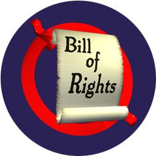

<!DOCTYPE HTML PUBLIC "-//W3C//DTD HTML 4.0//EN">
<HTML LANG="EN">
<HEAD>
<TITLE>L. Neil Smith's Webley Page</TITLE>
<META name="description" content="L. Neil Smith's Web Home: What I want to accomplish artistically amounts to nothing more than fulfilling the promise of the American Revolution.">
<META name="keywords" content="freedom, liberty, Bill of Rights Enforcement, 2nd Amendment, science fiction">
<META NAME="resource-type" CONTENT="document">
<META NAME="distribution" CONTENT="global">
<meta name="MSSmartTagsPreventParsing" content="TRUE">
<! -- -------------------------------------------------------------------------------------------- -->
<! -- ** HTML by Webley Web Works, copyright (c) by Ken L. Holder & Patricia A. Lawson, Props. ** -->
<! -- -------------------------------------------------------------------------------------------- -->
</HEAD>

<BODY TOPMARGIN=0 BACKGROUND="tools/edge_paleyellow-040.gif" BGCOLOR="#FFFFFF" TEXT="#000000" LINK="#FF0000" ALINK="#0000FF" VLINK="#0000FF">

<BLOCKQUOTE>

<FONT FACE="Arial", "Helvetica", "Verdana" SIZE="2">

<SMALL>You are here: <A HREF="index.html">Webley Page</A> &nbsp;&gt;&nbsp; Bill of Rights Enforcement</SMALL>

<p><H2>Bill of Rights Buttons and Cards -- Almost Ready to Go!</H2> 

<p>Friends, here's the latest, and, I hope, my next-to-last update on 
the Bill of Rights Enforcement button project that you may have heard 
about.
 
<p>For those of you who haven't been aware of it, here's what it's 
all about. Unless you've been living in a cave (somewhere other than 
Afghanistan) you know -- whatever it may be doing overseas, whatever 
we may individually think of it -- the current political regime has 
been using what happened on September 11 as an excuse to undermine and 
destroy the rights guaranteed us by the first ten amendments to the 
Constitution. 
 
<p>"Little things", like a speedy, public trial by jury, the right of 
_habeas corpus_, to privacy in all your communications, to be free of 
warrantless and secret searches of your property and possessions, the 
right to travel freely, regardless of your political affiliations, and 
most of all, the unimpeded right to free speech, and to own and carry 
weapons.
 
<p>Naturally, the socialist mass media are all for this and have 
spread their legs and lips as wide as they can for an administration 
rapidly proving to be as evil and perverse as the one that preceded 
it. More dismaying, many whom we might have expected to join us in 
opposing the Republocratic Party's fascist opportunism have instead 
endorsed it one way or another. The freedom movement is very rapidly 
losing whatever focus it could be said to have had before September 
11.
 
<p>As a tentative first step in rebuilding the movement and returning 
the country to the rule of law, I've asked my friend Scott Bieser to 
design a campaign-type button representing our insistence that the 
Bill of Rights be enforced like the highest law of the land it happens 
to be. I've also written a brief explanation of its vital importance 
to our way of life, to be printed on a small card that goes with each 
button.
 
<p>See the button, read the card at: 
<blockquote> 
<p>http:/www.lneilsmith.org/bore.html
</blockquote> 
<p>We've found a manufacturer who can produce both items at a highly 
acceptable price -- about 40 cents for each card and button -- 
provided we order 5001 buttons and a similar number of cards. Total 
cost, including shipping, is about $1800. I've asked for donations, 
and so far, have received $1150.23, or almost two thirds of what's 
needed.
 
<p>My first mailing was to a very small number of people, and they 
responded magnificently. Now I'm asking more people for help. I'd like 
to get this done, see the first buttons on jacket lapels across the 
country before Christmas. You can buy the buttons and cards and sell 
them, or you can give them away. It's a small but real step toward 
getting our country back. The holidays seem like a good time to take 
it.
 
<p>You can contribute outright (no organization, no tax deduction, 
only you and me and a determination to stay free), you can pre-order 
buttons and cards, or do both. Everything is being done at cost. The 
simplest way is to send me a postal money order (please write to me 
for my snailk mail address) and a note describing just what you want 
done. 
 
<p>If there isn't enough in a week or so I'll return your money.
 
<p>If there's a surplus we'll order more.
 
<p>Tell the fools and villains where you stand. Give some heart and 
strength to those around you who may agree with you but are afraid to 
speak out. Offer them something that they can build their courage 
around.
 
<p>Let's get our country back.
 
<p>Thank you,
 
<p>L. Neil Smith

<center>
<p><b>The Button:</b>
<br>
<br>The buttons will be 1 3/4" in diameter
</center>

<p><b>The Card's Text:</b>
<blockquote>
<p><font face="Arial,Helvetica,Verdana" size="5"><b>Save America -- Enforce the Bill of Rights</b></font>
 
<p><b>By L. Neil Smith
<br><mailto:&#109;&#97;&#105;&#108;&#116;&#111;&#58;&#108;&#110;&#101;&#105;&#108;&#64;&#108;&#110;&#101;&#105;&#108;&#115;&#109;&#105;&#116;&#104;&#46;&#111;&#114;&#103;">&#108;&#110;&#101;&#105;&#108;&#64;&#108;&#110;&#101;&#105;&#108;&#115;&#109;&#105;&#116;&#104;&#46;&#111;&#114;&#103;</a></b>
 

<p><br>The first ten amendments to the U.S. Constitution -- commonly 
known as the Bill of Rights -- are the highest law of the land. 
 
<p>Over the 200 years it's been in force, certain people -- usually 
politicians and bureaucrats who wanted more power and found the Bill 
of Rights an inconvenient obstacle (exactly as it was intended to be) 
-- have argued over its proper interpretation.
 
<p>During the Lincoln, Wilson, and second Roosevelt Administrations, 
the Bill of Rights was openly violated and even set aside, using an 
ongoing war as a handy excuse. As a result, the size and power of 
government grew at the expense of individual liberties which, for the 
most part, were never given back even when the war was over. Similar 
violations have been committed in the name of the War on Drugs. 
 
<p>However no legal provision exists for the suspension of the Bill 
of Rights, in time of war or any other emergency. Any government 
employee, elected or appointed, from policeman to President, who 
violates it, no matter what justification he offers, is a criminal.
 
<p>This claim may appear strange or trivial, until we count the cost 
of such violations, and realize that the events of September 11, 2001 
could never have happened if the rule of law -- the highest law of the 
land -- had been fully enforced as the nation's Founders intended.
 
<p>If Constitutional limits on the power of government -- on the 
President and Congress -- had been properly enforced, the kind of 
interference typical of American foreign policy that has made people 
overseas hate us and want to kill us would have been impossible.
 
<p>And if the Second Amendment had been enforced, the September 11 
killers would have faced aircraft containing armed passengers and 
would probably never have thought of trying to hijack those planes.
 
<p>So far, the government's response to its own terrible failures of 
September 11 has been to imitate Lincoln, Wilson, and Roosevelt, and 
do its best to limit the freedom of Americans even further, passing 
laws and creating regulations that violate nearly every one of the 
first ten amendments and transform America into a police state.
 
<p>And in a transparent and pathetic effort to look better in its 
blundering, the government cites polls taken of a populace who have 
been indoctrinated all their lives by establishment mass media and the 
public schools -- and haven't the vaguest clue what their rights are, 
or what's been done to them in war after war.
 
<p>The fact is, crime of any kind, whether it kills six people or six 
thousand, represents a diffuse threat, and can only be countered with 
a diffuse defense. Individuals must be free to act -- as individuals 
-- against it. Only the most stringent, energetic, and enthusiastic 
Bill of Rights enforcement can guarantee that freedom to act.
 
<p>Those Founding Founders who wrote the Bill of Rights made sure it 
was written clearly, in plain language. They meant it to be understood 
by everybody, not just lawyers and judges -- working for politicians 
and bureaucrats -- attempting to "explain" it all away.
 
<p>There is only one correct way to interpret the Bill of Rights. Put 
yourself in the Founding Fathers' place: if you had just finished a 
long, bloody shooting war against the biggest, most violently ruthless 
empire on the planet -- and surprised yourself and everybody else by 
winning it -- and the last thing you wanted was to find yourself, your 
children, or their children under the heel of tyranny again, exactly 
what would you have intended the Bill of Rights to mean?
 
<p>Is it possible you would have given government -- which the 
Founders saw as the natural enemy of human freedom, dignity, and hope 
-- the power to suspend the Bill of Rights? Or would you have wanted 
those vital, life-giving rights protected by a new kind of government 
whose only excuse for existing was to enforce them?
 
<p>The Bill of Rights is what America is all about. Without it, we'd 
be just like any other country with too much government. We'd be like 
China, or Russia, or Germany without the Bill of Rights. As somebody 
said, we'd be the world's biggest banana republic.
 
<p>Every problem America ever had could have been solved by enforcing 
the Bill of Rights. Every problem America has now could be solved by 
enforcing the Bill of Rights. Every problem America will ever have 
will be solved by enforcing the Bill of Rights. 
 
<p>Or else it won't be America any more.
 
<p><font size="+1"><b>For further information, contact <a href="&#109;&#97;&#105;&#108;&#116;&#111;&#58;&#108;&#110;&#101;&#105;&#108;&#64;&#108;&#110;&#101;&#105;&#108;&#115;&#109;&#105;&#116;&#104;&#46;&#111;&#114;&#103;">&#108;&#110;&#101;&#105;&#108;&#64;&#108;&#110;&#101;&#105;&#108;&#115;&#109;&#105;&#116;&#104;&#46;&#111;&#114;&#103;</a></b></font>

</blockquote>

<p><br><h3>More Bill of Rights Enforcement:</h3>

<p><b><a href="bor_enforcement.html">Bill of Rights Enforcement!</a></b> -- what it's all about.

<p><b><a href="bor_sites.html">Bill of Rights Enforcement Sites</a></b> -- people who support Bill of Rights Enforcement

<P><BR><HR SIZE="5" NOSHADE>
<SMALL>You are here: <A HREF="index.html">Webley Page</A> &nbsp;&gt;&nbsp; Bill of Rights Enforcement</SMALL>
<HR SIZE="5" NOSHADE>

</FONT>
</BLOCKQUOTE>
</BODY>
</HTML>

